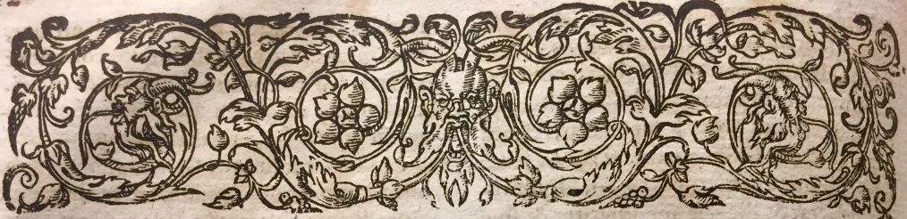

Métadictionnaire médical multilingue
Haut de la page des A du De Gorris (1601), volume consultable
sur Medica
Feuilletage des volumes
| De Gorris |
1601 |
| Castelli |
1628 |
| Thevenin |
1658 |
| Chomel |
1709 ; 1741 |
| James |
1743-1745 ; 1746-1748 |
| Gissey |
1750 |
| Dufieu |
1766 |
| Le Vacher |
1767 |
| Buc'hoz |
1770-1771 ; 1772-1776 ; 1775 |
| Hélian |
1771 |
| Eloy |
1778 |
| Encyclopédie
Méthodique |
1787-1830 |
| Lavoisien |
1793 |
| Jolyclerc |
1797 |
| Plantes alimentaires |
1803 |
| Rivet |
1803-1805 |
| Capuron |
1806 |
| Panckoucke |
1812-1826 |
| Nysten |
1814-1845 |
| Adelon |
1821-1828 ; 1832-1846 |
| Bégin |
1823 |
| Dezeimeris |
1828-1839 |
| Coster |
1829 |
| Andral |
1829-1836 |
| Mérat |
1829-1846 |
| D'Arboval |
1838-1839 |
| Beaude |
1849 |
| Fabre |
1850 |
| Littré |
1855-1908 |
| Bouley |
1856-1894 |
| Poujol |
1857 |
| Roussel |
1859 |
| Jaccoud |
1864-1886 |
| Dechambre |
1864-1889 ; 1885 |
| Bouchut |
1867 |
| Dujardin-Beaumetz |
1883-1895 |
| Labarthe |
1887 |
| Guilland |
1888 |
| Carnoy |
1895 |
| Larousse médical illustré |
1917 ; 1924 |
| Vidal |
1914-1943 |